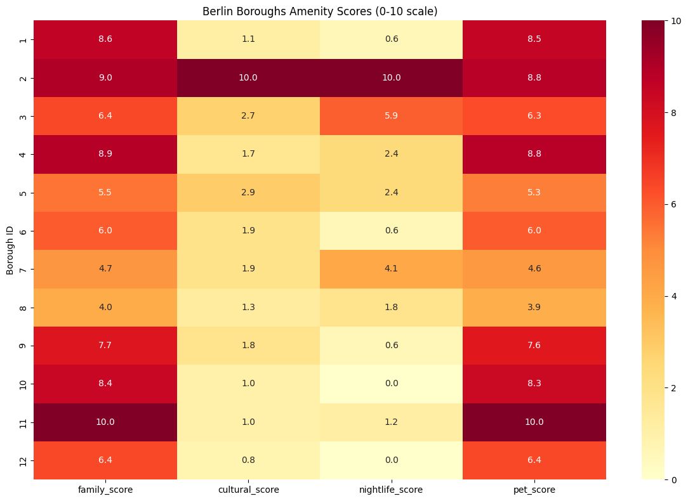
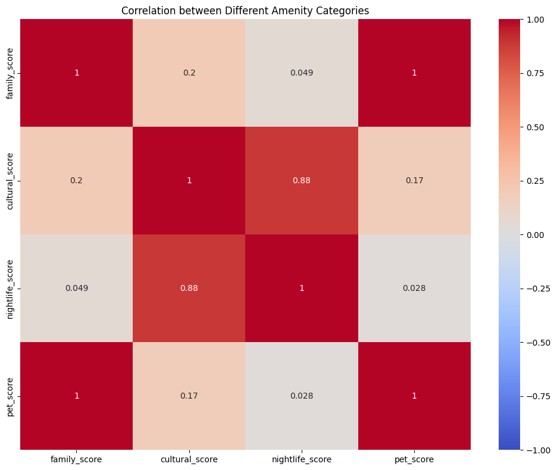
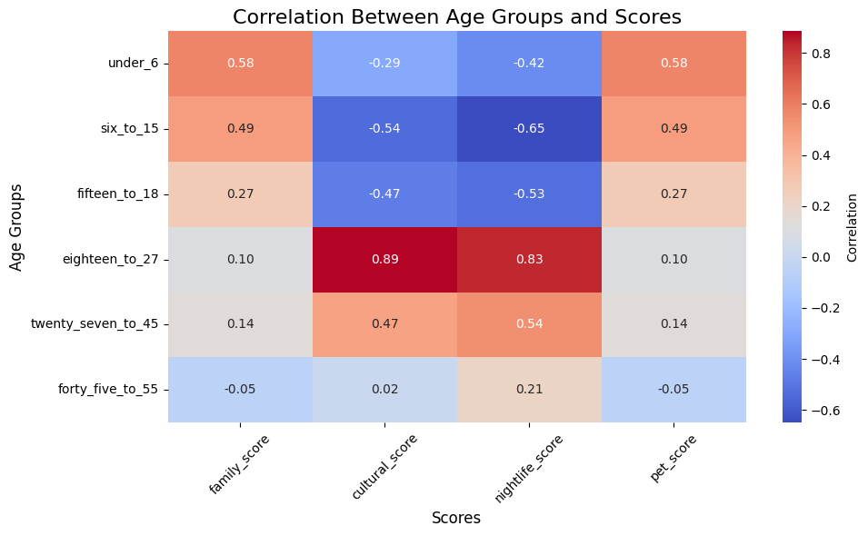

November 2024
Berlin Borough Lifestyle Analysis
Public-data exploration of amenities, demographics and crime indicators across Berlin boroughs.



What I analysed
The project compares amenity scores, age-group patterns and crime indicators across Berlin boroughs, with a focus on how different variables relate to lifestyle profiles.
Outcome
The analysis combines multiple public datasets to compare borough-level lifestyle patterns and communicate the results through clear visual summaries.